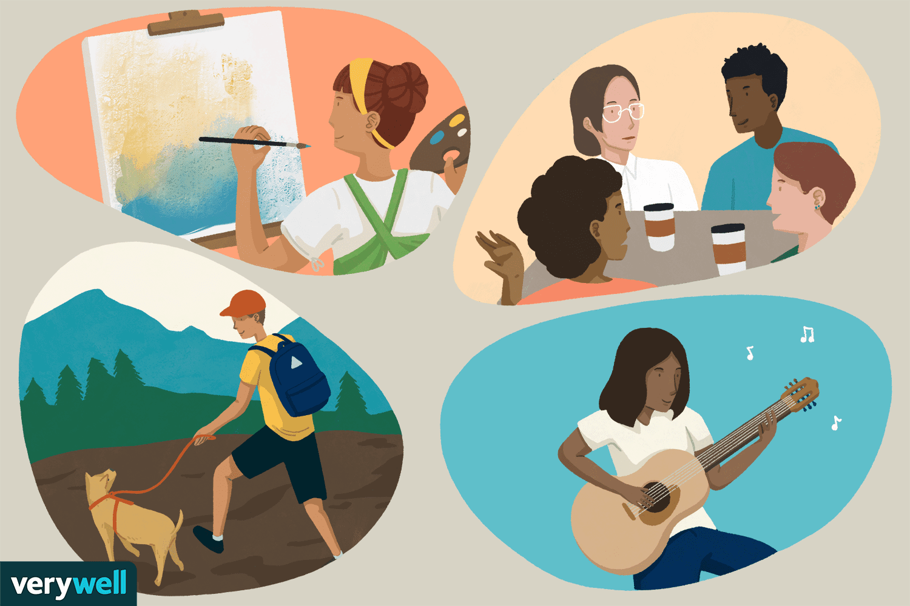
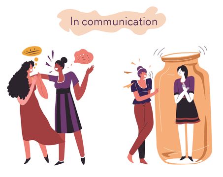
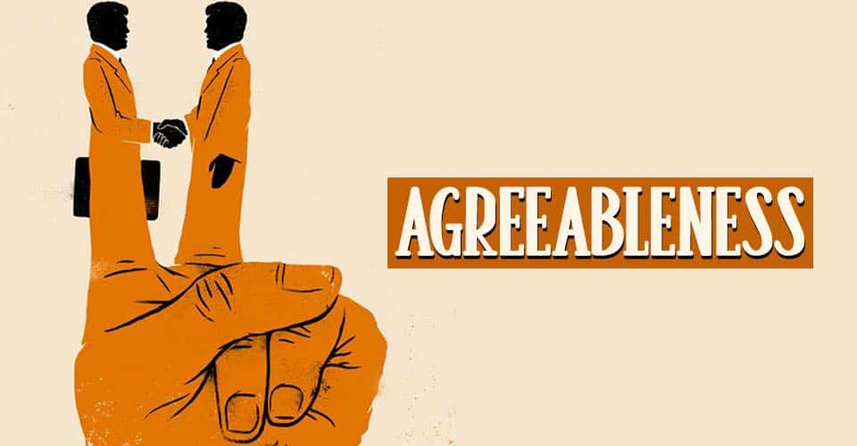
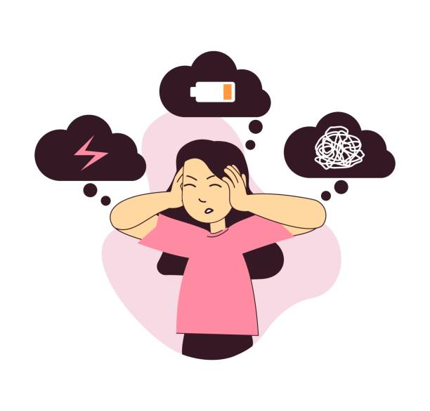

Openness

Openness (also known as openness to experience) places the greatest emphasis on imagination and insight.
High-openness personality types frequently have a diverse range of interests.
They are enthused to learn new things and relish new experiences because they are curious about the world and other people.
The openness trait is heavily influenced by creativity, which promotes more comfort with lateral and abstract thought.
Consider the individual who consistently chooses the fanciest item on the menu, travels, and has hobbies that you never would have imagined.
That person exhibits a great level of openness.
Anybody who scores poorly on this feature is likely to be perceived as having more conventional life views and may find it difficult to solve problems that are outside of their area of expertise.
Conscientiousness
Conscientiousness is a personality trait characterized by high levels of thinking, effective impulse control, and goal-directed behaviors.
People that are highly conscientious are usually well-organized and attentive to details. They are organized, considerate of others' feelings, and mindful of deadlines.
Someone you know who consistently thinks ahead for the next time you meet and, in the interim, keeps in touch with you to inquire about how you're doing would be an excellent example of someone who is diligent.
When you first meet, they are very focused on you and want to plan around particular occasions.
Individuals with low conscientiousness typically detest routines and organization, put off critical chores, and perform poorly on tasks as well.
Extraversion

Excitability, friendliness, talkativeness, assertiveness, and a high level of emotional expressiveness are characteristics of extraversion, a personality trait.
Extraverted individuals are gregarious and exude enthusiasm in social settings. They are invigorated and happy when they are around other people.
Everyone has at least one friend or relative who isn't exactly a wallflower in social situations.
They like socializing with new people, enjoy being the center of attention, and somehow always seem to have the largest circle of friends and acquaintances you have ever encountered.
Naturally, an introvert is someone we may know in our lives who is the exact opposite. They are less energetic in social settings and prefer seclusion.
Making small chat or being the center of attention may be quite exhausting.
Sales, marketing, education, and politics are just a few professions where extroverts frequently work in extremely public settings.
Extroverted individuals are more inclined to take the initiative than introverted individuals who prefer to blend in with the background and appear inactive.
Agreeableness

Trustworthiness, altruism, kindness, affection, and other prosocial traits are included in this personality trait.
Those with high levels of agreeableness are more likely to be cooperative, while those with low levels of this personality trait are more likely to be aggressive and occasionally even manipulative.
Disagreeableness is the opposite of agreeableness, however it takes the form of socially awkward behavioral habits.
Manipulation and hostility against others, lack of compassion or empathy, and disinterest in other people's issues are all quite typical.
People with good attitudes frequently work in fields where they can most effectively contribute.
High on the agreeableness scale include those who work in the third sector (social studies), medical, mental health, and even those who volunteer in soup kitchens.
Neuroticism

Sadness, irritability, and emotional instability are characteristics of neuroticism, a personality trait.
High neurotic people frequently experience mood swings, anxiety, irritability, and sadness. People who score lower on this personality trait tend to be more emotionally stable and resilient.
The capacity of a person to handle stress and real or imagined risk is anxiety, which contributes significantly to neuroticism.
Neurotic people tend to overthink things frequently and struggle to unwind, even in private.
Of course, those with lower levels of neuroticism will react to stress and events in a more steady and emotionally resilient manner.
Low neurotic patients also seldom experience sadness or depression because they take the time to concentrate on the here and now rather than performing mental calculations on potential stress-causing variables.